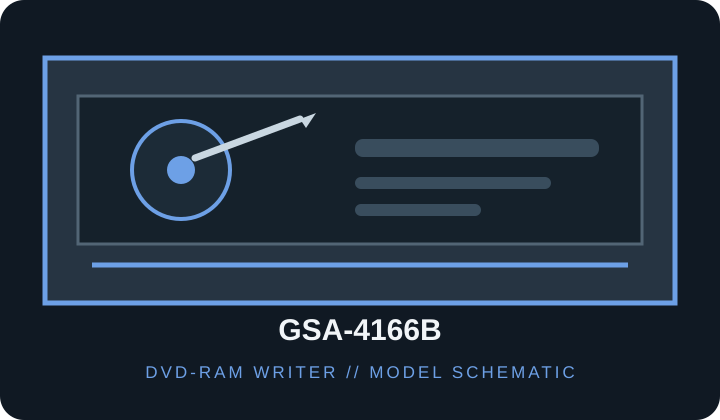

[ DVD-RAM WRITERS // IDENTIFIED MODEL ]
LG GSA-4166B Super Multi DVD Rewriter
DVD-RAM capable optical writer; verify the exact suffix and media revision. Model-specific rated speeds, media and host requirements follow. Maximum rates are media- and mode-dependent, not guaranteed sustained throughput.

IDENTIFICATION: Match the complete drive label, OEM/SKU suffix and firmware to the cited model manuals; similar names may use different interfaces, supported media and speeds.
Documented specifications
| Catalog subcategory | DVD-RAM writers |
|---|---|
| Exact model / SKU | GSA-4166B |
| Supported media formats | CD-ROM, CD-R/RW; DVD-ROM, DVD±R/RW, DVD+R DL and DVD-RAM; LightScribe label media is supported on applicable media/software. |
| Rated read speeds | DVD-RAM read/write up to 5×. Other read-rate ceilings depend on disc format and are not inferred here. |
| Rated write speeds | DVD-RAM 5×; DVD±R up to 16×; CD-R up to 48×. Rewritable and dual-layer writing are supported; consult the model manual for media-specific speed limits. |
| DVD-RAM capability | DVD-RAM read/write up to 5×. |
| Interface / bay | Enhanced-IDE / ATAPI (PATA); internal 5.25-inch half-height tray drive. |
| Host compatibility | Internal 5.25-inch half-height PATA bay; connect to a 40-pin IDE/ATAPI host channel and 4-pin peripheral power, with channel jumper set correctly. Requires host optical-drive and authoring software support; DVD-RAM packet writing/UDF is OS/application dependent. |
| Model distinction | GSA-4166B includes LightScribe capability and is not the same SKU as the GSA-4165B or GSA-4167B. |
Host compatibility and use notes
- Internal 5.25-inch half-height PATA bay; connect to a 40-pin IDE/ATAPI host channel and 4-pin peripheral power, with channel jumper set correctly. Requires host optical-drive and authoring software support; DVD-RAM packet writing/UDF is OS/application dependent.
- GSA-4166B includes LightScribe capability and is not the same SKU as the GSA-4165B or GSA-4167B.
- DVD-RAM packet writing is not implied by hardware support alone; confirm UDF/filesystem and application support, compatible media version and cartridge restrictions.
- For preservation use, record exact label, firmware, media identifier, host controller/software, write mode and verification results; retain checksums and error logs.
Use only supported media; handle discs by the edge or center hole and store in a cool, dry case away from direct sunlight. Test and verify each recording before relying on it as an archive copy.
Sources
- LG GSA-4166B specifications/manualExact-model specifications, formats and installation notes.
- LG GSA-4166B product supportManufacturer support reference for this exact model.